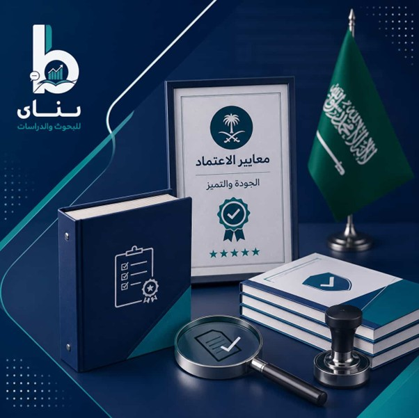

مقدمة
تعد عملية إعداد وتصميم الحقائب التدريبية الركيزة الأساسية لنجاح أي برنامج تعليمي أو تدريبي يهدف إلى تطوير المهارات ورفع الكفاءات البشرية. فإذا كنت تسعى إلى التميز في سوق التدريب، يجب أن تدرك أن تصميم الحقائب التدريبية يتطلب دقة متناهية في اختيار المحتوى والوسائل التعليمية المناسبة. سنستعرض في هذا الدليل خطوات إعداد الحقيبة التدريبية المعتمدة التي تضمن للمدرب والمؤسسة تحقيق أقصى استفادة وتأثير ملموس على المتدربين.
لتحقيق ذلك، تبرز بنان كشريكك الأمثل، حيث نقدم لكم أفضل أمثلة على الحقائب التعليمية المبتكرة. نحن نتقن كيفية إنشاء حقيبة تدريبية متكاملة تتضمن طريقة عمل حقيبة تدريبية احترافية تناسب احتياجاتكم. تعتمد مؤسستنا أحدث طريقة اعداد حقيبة تدريبية تدمج بين الجانب النظري والتطبيقي، مما يجعلنا الوجهة الأولى لخبراء التدريب الراغبين في كيفية اعداد الحقيبة التدريبية بجودة استثنائية.
مفهوم الحقائب التدريبية ودورها في تطوير العملية التدريبية
الحقيبة التدريبية (Training Package) عبارة عن برنامج تدريبي يشتمل على الخبرات والمعلومات والمهارات والمعارف النظرية والعملية، التي تسعى للارتقاء بمستوى الفرد، ويتم التدريب عليها بشكل متسلسل ومتكامل. وتحتوي على الأهداف والموضوعات والأنشطة والتوقيت والأدوات اللازمة لعملية التدريب، وقد تكون الحقيبة التدريبية إلكترونية أو ورقية مطبوعة.
كيف تساهم الحقائب التدريبية في تحسين مخرجات التدريب
تُحسّن الحقائب التدريبية من بنان مخرجات عملية التدريب من خلال التركيز على قدرات المتدربين وتزويدهم بالمهارات المطلوبة وفقًا للمعايير التدريبية المطلوبة، ومواكبة التقنيات والممارسات الحديثة في المجالات المحددة، وإنشاء محتوى تدريبي عالي الجودة وقائم على الأسس والأهداف التي تتناسب مع متطلبات الوظيفة أو التعليم أو مجال الصناعة.
احصل على برامج تدريبية احترافية ومتكاملة من خلال خدمة إعداد الحقائب التدريبية المصممة لتناسب أهدافك واحتياجات المتدربين.
الأهداف الاستراتيجية لاستخدام الحقائب التدريبية في المؤسسات
تلجأ المؤسسات إلى التدريب كاستراتيجية لأنه يعزز بشكل مباشر أداء الموظفين وفعالية المؤسسة ككل. فهو نشاط مدروس في بناء القدرات. وتتشكل تلك الأهداف في:
- سد الفجوة بين المهارات المطلوبة وكفاءات الموظفين لتحقيق أهداف العمل.
- بناء كوادر مؤهلة قادرة على التكيف مع التغييرات المهنية.
- تعزيز الرضا الوظيفي للموظفين في المؤسسة.
دور الحقيبة التدريبية في رفع كفاءة البرامج التدريبية
تمثل الحقيبة التدريبية من بنان عنصرًا أساسيًا في رفع كفاءة البرامج التدريبية، إذ تُوفّر هيكلًا منهجيًا موجهًا لتحقيق الأهداف التعليمية والمهنية. ويتضح دور الحقيبة التدريبية في ترشيد عملية تقديم التدريب وتقييمه، وتصميم مواد علمية تتناسب مع احتياجات القطاع والمؤسسات والأفراد. ويكتمل دور الحقيبة التدريبية في تصميم مسبق للمواد والخطط المدروسة، وإعداد أدوات التقييم المناسبة.
تصنيفات وأنواع الحقائب التدريبية وفق أحدث الممارسات
تستعرض بنان تصنيف الحقائب التدريبية وفق أحدث الممارسات التدريبية، حيث تتنوع العمليات التدريبية وفقًا لأغراض التدريب والتصميم، ومن أنواع الحقائب التدريبية:
- حقائب تدريبية وفق المهارات التقنية والوظيفية.
- حقائب تدريبية وفق المهارات المهنية الأساسية (المهارات الشخصية).
- حقائب تدريبية لتطوير الأعمال والعلامة التجارية.
- حقائب تدريبية للصحة المهنية.
أنواع الحقائب التدريبية حسب المحتوى التدريبي
تتنوع أنواع الحقائب التدريبية حسب طبيعة المحتوى التدريبي، حيث يتحول التركيز على الفئة المستهدفة إلى المعرفة القابلة للنقل. فيما يلي توضح بنان الأنواع الرئيسية للحقائب التدريبية بناءً على المحتوى:
- الحقائب التدريبية القائمة على المعرفة ونقل المعلومات.
- الحقائب التدريبية القائمة على نقل المهارات بأنواعها.
- الحقائب التدريبية القائمة على السلوكيات والمواقف المتنوعة.
- الحقائب التدريبية القائمة على البرامج المتكاملة والهجينة.
- الحقائب التدريبية القائمة على نوع المحتوى الطبي، والتعليمي، وإدارة الأعمال، والهندسة وغيرهم.
أنواع الحقائب التدريبية حسب الفئة المستهدفة
عند تصنيف برامج التدريب حسب الفئة المستهدفة، يتم تعديل المحتوى والأسلوب وطريقة التقديم لتتناسب مع معارف المشاركين ومستواهم المهني واحتياجاتهم الخاصة. ولقد جمعت بنان الأنواع الرئيسية للحقائب التدريبية حسب الجمهور المستهدف:
- الحقائب التدريبية الفردية: مصممة خصيصًا لتلبية أهداف محددة لشخص واحد.
- الحقائب التدريبية الجماعية: مصممة للجماعات والفرق أو المجموعات، وتركز على النمو الجماعي وتوحيد المهارات والتفاعل بين الزملاء.
- الحقائب التدريبية الهرمية (حسب المستوى المهني): تُصمم بناءً على رتبة الموظفين أو خبرتهم داخل المؤسسة.
- الحقائب التدريبية بناءً على مجموعات مهنية متخصصة: صُممت لقطاعات أو أدوار محددة تتطلب خبرة متخصصة.
- الحقائب التدريبية حسب الجمهور المستهدف: تُصنف وفقًا لمجموعات حسب استعدادها أو علاقتها بالمادة.
مكونات الحقيبة التدريبية الاحترافية من الألف إلى الياء
تتكون الحقائب التدريبية الحديثة من بنان من أربع مكونات أساسية يُطلق على كل واحدة منها لفظ "دليل"، وهذه الأدلة هي:
- دليل المتدرب: وهو دليل للمادة التدريبية التي ستوزع على المتدربين في البرنامج على هيئة نصوص كاملة ووافية.
- دليل المدرب: يمثل الخريطة التدريبية وفق تسلسل الوحدات التدريبية الواردة في دليل المشارك.
- دليل الأنشطة والتطبيقات: يتضمن مجموعة الأدوات التي يستخدمها المدرب لتنفيذ اللقاءات التدريبية التي يُكلَّف بها.
- دليل وسائل الإيضاح (العرض التقديمي): لا يمكن للمدرب الاستغناء عنه، ويتضمن الوسائل المستخدمة في تسهيل توصيل المحتوى.
مكونات حقيبة المدرب
حقيبة المدرب محتوى شامل صُمِّم وفق تسلسل الوحدات التدريبية الواردة في دليل المتدربين. ويجب أن تتضمن حقيبة المدرب الأجزاء التالية لكل وحدة تدريبية:
- ملخص المادة التدريبية لتوزيع الوقت الخاص بالتدريب، وعدم إهمال المدرب أي جزء من الوحدة التدريبية.
- قائمة بالمواد التدريبية والتمارين أثناء تنفيذ اللقاء التدريبي حتى يمكن للمدرب أن يراجعها ويتأكد من توافرها قبل تنفيذ اللقاء.
- خطة الدرس؛ من الضروري أن يلتزم بها المدرب لضمان تنفيذ التدريب بالشكل الذي يحقق الأهداف المحددة.
- الإرشادات التي يتبعها المدرب لضمان التنفيذ المنهجي لمحتوى البرنامج.
مكونات حقيبة المتدرب
عند تصميم حقيبة تدريبية، من الضروري أن تحتوي على حقيبة المتدرب التي تشمل المادة التدريبية الموزعة على المتدربين على هيئة نصوص كاملة تتفق مع الاحتياجات التدريبية. ومن مكونات حقيبة المتدرب:
- إعداد محتوى علمي جاهز قبل بداية البرنامج.
- مراعاة المنهجية عن طريق تنظيم وتسلسل محتوى الدليل، وتقسيمه إلى وحدات تدريبية.
- اتباع قواعد التعلم المتعارف عليها (من السهل إلى الصعب - من العام إلى الخاص).
- تحديد أهداف سلوكية لكل وحدة تدريبية.
خصائص تصميم الحقائب التدريبية الفعالة عالية الجودة
ترتكز خصائص الحقائب التدريبية الفعالة عالية الجودة من بنان في الخصائص الخمس التالية:
معايير بناء محتوى تدريبي مؤثر داخل الحقيبة
لضمان احترافية وفعالية المادة التدريبية، يجب بناء المحتوى وفقًا لمعايير التصميم التعليمي والتدريبي الدولية. فيما يلي أهم المعايير الأساسية لبناء محتوى تدريبي فعال من بنان:
- معيار ADDIE (الإطار الهيكلي): يُعد نموذج ADDIE المعيار الأكثر شيوعًا لتطوير المحتوى.
- معيار SMART: يجب أن تستند معايير المحتوى الموضوعي إلى أهداف معينة ومحددة.
- المعايير البصرية والتقنية: يرتكز على شكل المحتوى ووظائفه بنفس أهمية المعلومات نفسها.
- معايير التصميم التعليمي: لجعل المحتوى راسخًا في الذاكرة، يتبع البرامج التعليمية الفعّالة تسلسلًا نفسيًا.

خطوات إعداد الحقائب التدريبية بطريقة احترافية قابلة للتطبيق
يمر تصميم الحقائب التدريبية من بنان بخمس مراحل أساسية حتى تصبح الحقيبة التدريبية احترافية وقابلة للتطبيق:
-
أولًا: مرحلة التحضير
وتمثل مرحلة الإعداد وما قبل البدء في أي تدريب، وتُحدد "ماذا" و"لماذا". وتُحدد الفجوة بين المهارات الحالية والنتائج المرجوة، وتعطي نظرة عامة على الوحدات والدروس والتسلسل المنطقي للمعلومات. -
ثانيًا: مرحلة التصميم
تضمن مرحلة التصميم الأدوات التي يقدمها المدرب لتصبح عملية التدريب تجربة متسقة وعالية الجودة في كل مرة. من خلال نص أو مخطط تفصيلي يتضمن التوقيتات الزمنية ونقاط الحديث وتعليمات حول وقت بدء الأنشطة. -
ثالثًا: مرحلة التنفيذ
التدريب الفعال في الحقيبة التدريبية لا بد أن يُطبَّق ويُنفَّذ. ومرحلة التنفيذ بمثابة مهام موجهة يمارس فيها المتعلمون استخدام الأدوات أو التقنيات التي تم تدريسها. -
رابعًا: مرحلة التطوير
مرحلة التطوير هي المرحلة التي تُحوّل فيها المخططات إلى أصول ملموسة وفعّالة. وهي الأكثر استهلاكًا للوقت والجهد، إذ تتطلب توازنًا دقيقًا بين الدقة التقنية والوضوح التربوي. -
خامسًا: مرحلة التقييم
تتضح أهمية مرحلة التقييم في إثبات فعالية التدريب من خلال جمع البيانات. كاختبار قصير أو استبيان لتحديد مستوى المعرفة الأساسي للمتدرب، وتقييم المحتوى والمدرب والتجربة بشكل عام.
تحليل الاحتياجات التدريبية بدقة
تحليل الاحتياجات التدريبية (TNA) من بنان هي المرحلة التشخيصية التي تحدد ما إذا كان التدريب هو الحل الأمثل لمشكلة ما، أو ما يجب أن يشمله هذا التدريب تحديدًا. ويضمن تحليل الاحتياجات التدريبية عدم إهدار الموارد على تدريب يمتلكه الأفراد بالفعل أو لا يحتاجون إليه، وتحديد "فجوة الأداء" لتوضيح الفرق بين الوضع الحالي والوضع المنشود.
ويُعد تحليل الاحتياجات التدريبية أهم خطوة؛ بدونها قد تقدم دورة لا تُحل مشكلة موجودة أصلًا. ويضمن تحليل الاحتياجات التدريبية الناجح أن تكون حزمة التدريب دقيقة ومُخصصة، بحيث تُركز فقط على المهارات الضرورية لتحقيق أعلى عائد على الاستثمار المعرفي.
بناء وتصميم المحتوى التدريبي
يُعدّ بناء وتصميم المحتوى التدريبي من بنان حلقة الوصل بين الاحتياجات التدريبية وإنشاء وتصميم الحقيبة التدريبية. وبناء محتوى تدريبي يُحدث تغييرًا فعليًا في السلوك واكتساب المعلومات، يجب الالتزام بأربع خطوات:
- التصميم الكلي والهيكلي وتقسيم الموضوع إلى أجزاء منطقية.
- الالتزام بمبادئ تصميم المحتوى عالي المستوى والجودة.
- ضرورة تنظيم المحتوى بطريقة بصرية جذابة.
- إنشاء مخطط تفصيلي للمحتوى التدريبي.
تطوير وإخراج الحقيبة التدريبية
مرحلتا التطوير والإنتاج من بنان هما التنفيذ التقني لتصميم التدريب. في هذه المرحلة تنتقل الحقيبة التدريبية من المفاهيم العلمية النظرية والخطوط العريضة إلى مواد تدريبية نهائية جاهزة للاستخدام. تنقسم العملية إلى مرحلتي الإنشاء (التطوير) والتجميع (الإنتاج)، وتهدف إلى إزالة جميع العقبات التي تعترض عملية التعلم.
تقييم وتحسين الحقيبة التدريبية
مرحلة تقييم وتحسين الحقيبة التدريبية من بنان هي المرحلة الأخيرة من دورة حياة التدريب. هذه المرحلة بالغة الأهمية لأنها تُحوّل الحقيبة التدريبية العادية إلى حقيبة عالية الجودة ومتطورة باستمرار تلبي رغبة العملاء وتتناسب مع احتياجاتهم. والتقييم الفعال يعتمد في بنان على عدة نماذج منها نموذج كيركباتريك، المعيار الذهبي لتقييم التدريب.
إعداد وتصميم الحقائب التدريبية في موقع بنان وفق أفضل الممارسات
يعتمد إعداد الحقائب التدريبية من بنان وفق أفضل الممارسات على وضع خطة تنفيذية لعملية التدريب الفعلي، وذلك عن طريق إعداد المادة العلمية والخطوات الإجرائية اللازمة للتنفيذ. وتمثل الحقيبة التدريبية من بنان المنتج النهائي لمراحل ما قبل التدريب وتستخدم لتحقيق الأغراض الأساسية التالية:
- توضيح محتويات البرنامج وأهدافه وشروطه ومدته والوظائف المستهدفة.
- توضيح الوحدات التدريبية لكل مادة وزمنها وأهدافها وموضوعاتها.
- توضيح الأدوار المشاركة في التدريب (المدرب والمتدرب).
- تُستخدم كمرشد عام لإدارة الجلسات التدريبية.
- توفر المادة العلمية الأساسية والأدوات الضرورية للتطبيق العملي.
- توفر أدوات قياس اكتساب المهارات والمعارف.
منهجية موقع بنان في تصميم الحقائب التدريبية
منهجية تصميم الحقائب التدريبية من بنان هي إطار عمل منهجي يُستخدم لترجمة أهداف التدريب والتعلم إلى منتج تعليمي وتدريبي منظم وقابل للتكرار وفعّال. وتُعدّ منهجية التصميم التعليمي الهجينة، الجمع بين بنية نموذج ADDIE ومرونة نموذج SAM (نموذج التقريب المتتالي)، المنهجية الأكثر فعالية.
تطوير الحقائب التدريبية لمواكبة التغيرات في سوق العمل
لمواكبة التغيرات في سوق العمل الذي يتسم بالتحول الرقمي واتخاذ القرارات بناءً على البيانات، تطور بنان الحقائب التدريبية من خلال:
- تصميم الدورات التدريبية التقليدية المطولة بوحدات مُركّزة وعالية التأثير.
- دمج الذكاء الاصطناعي ومعرفة الأتمتة.
- التركيز على المهارات التقنية "المتمحورة حول الإنسان".
- ضمان أن تعكس البرامج هوية علامة تجارية عصرية ومتطورة تقنيًا.
استراتيجيات تحديث وتطوير المحتوى التدريبي
في بيئة العمل الاحترافية سريعة التطور، قد يصبح محتوى التدريب قديمًا في غضون أشهر. وتشمل أبرز استراتيجيات التحسين المستمر للحقائب التدريبية:
- استراتيجية التبديل المعياري: بدلًا من بناء دورات تدريبية متكاملة، صمِّم برامجك التدريبية كسلسلة من الوحدات المستقلة.
- استراتيجيات دراسة الحالة: توظيف حالات واقعية لتعزيز الاستيعاب وتعميق الفهم.
- استراتيجية التغذية الراجعة: جمع آراء المتدربين بشكل منتظم لتحسين المحتوى.
- استراتيجيات التدقيق الفني والتنظيمي للمحتوى التدريبي: مراجعة دورية للمحتوى ومواكبة أحدث الممارسات.
معايير اعتماد الحقائب التدريبية في السعودية ومتطلبات الجودة
تشير معايير اعتماد الحقائب التدريبية في السعودية إلى المعايير الرسمية التي تستخدمها الهيئات التنظيمية للموافقة على برنامج تدريبي أو إطار تأهيلي ومنحه شهادة اعتماد. فيما يلي ترصد بنان المعايير الرئيسية المطلوبة:
- التوافق مع معايير الكفاءة (Competence Standardised).
- الملاءمة للمجال حسب الاحتياجات.
- مدى وضوح مخرجات التعلم.
- التأكد من صلاحية وموثوقية أدوات التقييم.
- جودة التصميم التدريبي أو التعليمي.
- التوثيق والشفافية.
ضوابط الجودة لاعتماد الحقائب التدريبية
الهدف من ضوابط الجودة لاعتماد الحقائب التدريبية هو التأكد من ملاءمتها ودقتها وتوافقها مع المعايير وفعاليتها قبل اعتمادها. وأبرز تلك الضوابط:
- التوافق مع المعايير واللوائح.
- التحليل الموثق لاحتياجات التدريب والمتدربين.
- دقة المحتوى وصلاحيته ومواكبته للممارسات والتقنيات الحديثة.
- الاعتبارات الأخلاقية واعتبارات إمكانية الوصول.
الأدوات والوسائل التعليمية المستخدمة داخل الحقائب التدريبية
تتنوع الأدوات والوسائل التعليمية المستخدمة داخل الحقائب التدريبية، وعند تصميم حقيبة تدريبية من الضروري الجمع بينها لتنشيط المشاركين. فيما يلي ملخص الإرشادات من بنان:
- أدوات المدرب: دليل المدرب - ملخصات الجلسات - شرائح العرض التقديمي.
- أدوات المتدربين / المشاركين: دليل المتدرب - أوراق الأنشطة والتمارين - مواد القراءة.
- أدوات التقييم: الاستبيانات - الاختبارات القصيرة - نماذج التقييم.
- الأدوات المرئية والوسائط المتعددة: الرسوم البيانية والمخططات - مقاطع الفيديو - العروض التوضيحية - الرسوم المتحركة - المحاكاة التفاعلية.
التقنيات الحديثة في تصميم الحقائب التدريبية
تركز التقنيات الحديثة في تصميم الحقائب التدريبية على التصميم المتمحور حول المتعلم ودمج التكنولوجيا والنتائج القائمة على الكفاءات. ومن أهم تلك التقنيات:
- تقنية التعلم المصغر (Microlearning): تقديم المحتوى في وحدات صغيرة ومركزة.
- تقنيات الواقع المعزز (AR) والواقع الافتراضي (VR): لتجارب تدريبية غامرة.
- تقنية الفيديو التفاعلي (Interactive Video): لتعزيز التفاعل ومستوى الاستيعاب.
- تقنيات التحليلات البيانية (Data Analytics): لقياس الأداء وتحسين المحتوى.
مميزات استخدام الحقائب التدريبية في التدريب المؤسسي والتعليم
تكمن مميزات استخدام الحقائب التدريبية في التدريب المؤسسي والتعليم كونها تمكّن المتعلم أو المتدرب من الممارسة العملية للخبرات والمهارات، وبنان ترصد أهم مميزاتها في:
- فسح المجال أمام المتعلمين والمتدربين لاختيار الأنشطة المختلفة التي ينبغي القيام بها بحرية.
- إتاحة الفرصة للبحث عن النوع الأفضل لزيادة التفاعل النشط بين المعلم والمتعلم، والمدرب والمتدرب.
- إمكانية توظيفها في مختلف الميادين والمجالات كالمنهج المدرسي، وتدريب المؤسسات والشركات.
أثر الحقائب التدريبية على كفاءة المتدربين
تؤثر الحقائب التدريبية بشكل مباشر وقابل للقياس على كفاءة المتدربين، لأنها تُوفر محتوىً مُنظماً وأهدافاً واضحة وتقييماً منهجياً. ويمكن توضيح هذا التأثير من خلال عدة جوانب:
- زيادة التركيز على المهارات المطلوبة ذات الصلة بالمحتوى التدريبي.
- تحسين كفاءة اكتساب المعرفة لدى المتدربين والمتعلمين.
- مساعدة المتدربين على تطبيق المعرفة بشكل مباشر مما يُحسّن الأداء في مكان العمل ويُقلل الأخطاء.
- تشجيع المتدربين والمتعلمين على التحسين المستمر.
لماذا تختار موقع بنان لإعداد الحقائب التدريبية الاحترافية
تكمن خبرتنا في بنان في تصميم محتوى تعليمي وتدريبي سهل الاستخدام وجذاب يراعي معايير الجودة في تصميم الحقائب التدريبية المحلية والعالمية، ويلبي أنماط التعلّم المتنوعة في كافة المجالات. هذا يعني أن فريقنا سيساعدكم على إعداد مادة تدريبية احترافية جاهزة للعرض في أي وقت ومن أي مكان.
عوامل التميز في خدمات إعداد الحقائب التدريبية
يعتمد بنان في تصميم الحقائب التدريبية على تطبيق عوامل التميز عن طريق مزج معايير الجودة والخبرة المهنية والتصميم المنهجي والتحسين المستمر. وتشمل أهم العوامل:
- تحليل واضح للاحتياجات التدريبية والتعليمية وفقًا لمتطلبات المؤسسة أو القطاع.
- إعداد محتوى تدريبي متوافق مع المعايير العالمية.
- تصميم محتوى تدريبي وتعليمي قوي ومناسب جدًا للفئات المطلوبة.
- اعتماد لغة علمية وأكاديمية واضحة وموجزة وسهلة الفهم للمتعلم والمتدربين.
- فريق يجمع بين الخبرات المهنية والتدريب ذوو خبرة لأكثر من 10 أعوام في إعداد وتصميم الحقائب التدريبية.
- فريق من المراجعين الفنيين والأكاديميين للتأكد من المناهج التدريبية ومدى مطابقتها للمعايير العالمية.
ابدأ تصميم حقيبتك التدريبية الآن وتواصل مع خبراء بَنَانٌ Benaan:
لا تتردد في رفع كفاءة تدريبك الآن! تواصل معنا للحصول على استشارتك المجانية وتصميم حقيبتك القادمة:
الخاتمة
تُعدّ الحقائب التدريبية حجر الزاوية في التطوير الفعال للموظفين والمتعلمين في كافة المجالات، إذ تسدّ الفجوة بين المعرفة والتطبيق العملي لتمكين الموظفين والمتعلمين والمتدربين من النمو والتطور. فضلًا عن ذلك، تُسهم أيضًا في نجاح المؤسسة من خلال تعزيز الابتكار، وتحسين الإنتاجية، وتعزيز الامتثال. سواءً كان لديكم محتوى تعليمي أو تدريبي، أو فيديوهات، أو قوائم مراجعة، فإننا في بنان نُوظّف أحدث التقنيات والأساليب لتطوير دورات تعليمية وتدريبية مخصصة تتناسب مع أهداف مؤسستكم.
الأسئلة الشائعة
كيف يتم اختيار نوع الحقيبة التدريبية المناسب لكل برنامج تدريبي؟
يُعدّ اختيار برنامج التدريب المناسب قرارًا استراتيجيًا. لا يكمن الهدف في اختيار البرنامج "الأفضل" بشكل عام، بل في اختيار البرنامج الذي يُناسب أهداف برنامجك، والمتدربين، وسياقه على أفضل وجه. وتساعدك بنان على تحديد نوع الحقيبة التدريبية المطلوبة وفقًا لاحتياجاتك التدريبية. والبرنامج التدريبي الأمثل هو الذي يتوافق مع أهداف البرنامج، ويلبي معايير القطاع المتخصص، ويلبي احتياجات المتدربين، ويتضمن أدوات تقييم فعّالة، ويتوافق مع متطلبات الاعتماد.
ما الفرق بين إعداد وتصميم الحقائب التدريبية في التطبيق العملي؟
يكمن الفرق بين تصميم وإعداد برامج التدريب عمليًا في مستوى العمل والمسؤولية في كل مرحلة، بدءًا من التصميم والتخطيط والتصور وفقًا لأهداف التدريب، إلى مرحلة إعداد برامج التدريب وهي المرحلة التشغيلية. الإعداد هو مرحلة التنفيذ التي تركز على تحويل التصميم إلى مواد وأدوات تدريبية فعلية.
كيف تؤثر جودة الحقيبة التدريبية على نتائج التدريب؟
تؤثر جودة البرنامج التدريبي بشكل مباشر وقابل للقياس على نتائج التدريب، لأنها تُحدد محتوى التدريب، وطريقة تقديمه، وكيفية تقييم التعلّم. وعندما يكون البرنامج التدريبي مُصمماً بشكل جيد، تتحسن النتائج في مجالات المعرفة والمهارات والأداء، وصولاً إلى نتائج المؤسسة.
ما أهم المعايير التي يجب مراعاتها عند تطوير الحقائب التدريبية؟
عند تطوير الحقائب التدريبية من بنان، تعتمد الجودة على مجموعة من المعايير الواضحة. تشمل أهم هذه المعايير: تقييم الاحتياجات، وأهداف تعليمية واضحة، وملاءمة المحتوى ودقته، والتوافق مع مخرجات التدريب، وأساليب التدريب المناسبة.
ما الأدوات الحديثة المستخدمة في إعداد الحقائب التدريبية؟
في ظل التطورات الحديثة والتقنيات التكنولوجية، تعتمد الأدوات الحديثة المستخدمة في إعداد الحقائب التدريبية على الأدوات الرقمية المدعومة بالذكاء الاصطناعي، والأدوات التعاونية التي تجعل تصميم المحتوى التعليمي أسرع وأكثر تفاعلية وقابلية للقياس.
المراجع
- Bray, T. (2006). The training design manual: The complete practical guide to creating effective and successful training programmes. Kogan Page Publishers.
- Carliner, S. (2015). Training design basics. Association for Talent Development.
- Clark, R. C., & Lyons, C. (2010). Graphics for learning: Proven guidelines for planning, designing, and evaluating visuals in training materials. John Wiley & Sons.